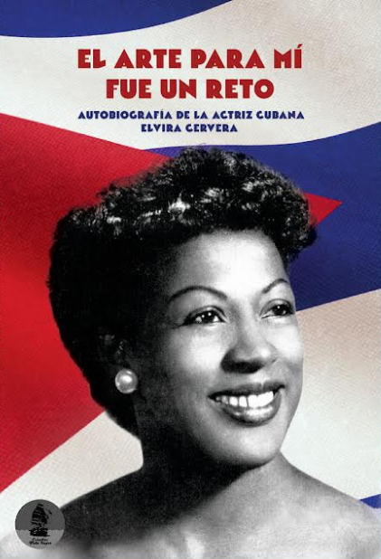

El arte para mí fue un reto - Autobiografía de la actriz cubana Elvira Cervera
Argentina · 2026 · Colectivo Flota Negra
La obra recupera el testimonio de una artista que enfrentó la exclusión racial en el teatro, la radio, el cine y la televisión. La edición cuenta con la participación de su hija, Alejandra Egido, y puede reservarse a precio promocional. La historia de Elvira Cervera examina cómo el racismo se reproduce en las instituciones culturales, en la selección de intérpretes, en los criterios de belleza y en la distribución de oportunidades profesionales.